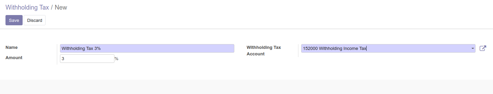
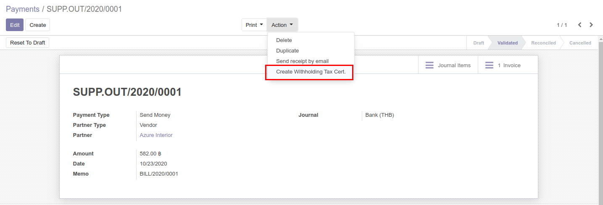
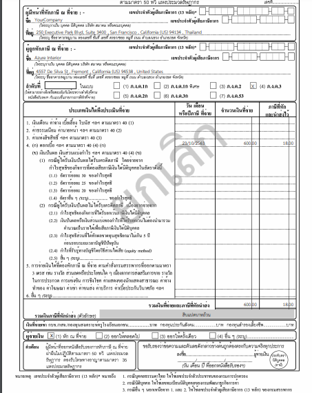

Account: Withholding Tax
ภาษีหัก ณ ที่จ่าย
ภาพรวม
ภาษีหัก ณ ที่จ่าย เป็นเงินภาษีที่ผู้จ่ายเงินจะหักออกจากเงินที่จะจ่ายให้กับผู้รับ โดยผู้จ่ายเงินมีหน้าที่นำเงินภาษีหัก ณ ที่จ่าย นำส่งให้กับสรรพากร
ส่วนผู้รับเงินก็จะได้รับหนังสือรับรองการหัก ณ ที่จ่าย จากผู้จ่าย เพื่อเป็นหลักฐานในการยื่นแบบภาษีกับสรรพากรว่าได้ชำระภาษี ในรูปแบบของภาษีหัก ณ ที่จ่าย
ที่ทยอยจ่ายไว้แล้วในระหว่างปีเป็นจำนวนเท่าไหร่นั่นเอง
โมดูลที่ใช้
Odoo 13.0
โมดูลหลักในการทำภาษีหัก ณ ที่จ่าย
ในระบบ odoo มาตรฐานจะมีการรองรับ withholding tax อยู่แล้ว แต่ไม่ครอบคลุมกับการทำภาษีหัก ณ ที่จ่ายของประเทศไทย
ดังนั้นจึงต้องมีการติดตั้ง module เพิ่มเติม ซึ่ง module ที่จำเป็นในการออกภาษี ณ ที่จ่ายจะมีอยู่ 3 module ได้แก่
ส่วนที่เหลือจะเป็นส่วนที่เพิ่มเติมขึ้นมา ใช้สำหรับบางกรณี อาจจะติดตั้งหรือไม่ก็ได้
การตั้งค่า / สร้างเอกสารภาษีหัก ณ ที่จ่าย
ให้ติดตั้ง module Withholding Tax และ Withholding Tax Cert จาก source code ด้านบน
เมื่อติดตั้งเสร็จสิ้น ระบบจะสามารถตั้งค่าเลือก Account ที่ต้องการให้เป็น Withholding Tax ได้ เผื่อกรณีที่ต้องการให้ระบบหักภาษี ณ ที่จ่ายแบบอัตโนมัติ
โดยมีวิธีดังนี้ (Optional)
- ไปที่เมนู Invoicing > Configuration > Accounting > Chart of Accounts
- เลือก Account ที่ต้องการให้ทำเป็น Withholding Tax > ติ๊กถูกที่ Field WT Account

- ไปที่เมนู Invoicing > Configuration > Invoicing > Withholding Tax
- สร้างเอกสารใหม่ แล้วกำหนดค่าต่าง ๆ ที่ต้องการหักภาษี > Save

- Name : ชื่อที่จะแสดง
- Amount : ร้อยละที่ต้องการหักภาษี
- Withholding Tax Account : account ที่เป็น withholding tax เท่านั้น (กำหนดจากข้อ 2)
ในกรณีที่ต้องการให้ระบบคำนวณภาษี เมื่อเลือกสินค้าที่ต้องการ สามารถตั้งค่าได้ดังนี้
- ไปที่เมนู Invoicing > Vendors > Products
- เลือก Product ที่ต้องการหักภาษี ณ ที่จ่าย
- คลิก Purchase Tab > เลือก Withholding Tax > Save
Note
หมายเหตุ : หากไม่เลือก WT Account ระบบไม่คำนวณการหักภาษี ณ ที่จ่ายให้อัตโนมัติ แต่สามารถให้ผู้ใช้งานเป็นคนกรอกข้อมูลในส่วนนี้ได้
ขั้นตอนการทำภาษีหัก ณ ที่จ่ายในระบบ
กระบวนการทำภาษีหัก ณ ที่จ่ายสามารถทำได้ที่หน้า Payment กับ Journal Entries (สร้างตรง)
กรณีที่มีการทำภาษีหัก ณ ที่จ่ายมากกว่า 1 บรรทัดในเอกสาร 1 ใบ
จะต้องติดตั้ง module Withholding Tax Multi เพื่อให้ระบบสามารถทำภาษีได้มากกว่า 1
1. การทำภาษีหัก ณ ที่จ่ายที่หน้า Payment
สามารถให้ระบบคำนวณให้อัตโนมัติ หรือจะคำนวณเองก็ได้ ถ้าต้องการคำนวณเองไม่ต้องทำข้อ 3 และ 4 ซึ่งขั้นตอนการคำนวณภาษีที่หน้า Payment จะมีดังนี้
- ไปที่เมนู Invoicing > Vendors > Bills
- สร้างเอกสารที่ทำการซื้อและมีภาษีหัก ณ ที่จ่าย
- คลิกที่ 3 จุดตรง Invoice Lines > แสดง WT

- เลือก WT ที่ต้องการจากการตั้งค่าก่อนหน้านี้ ในกรณีที่มีการตั้งค่า Withholding Tax ใน Product นั้น ระบบจะเลือก WT ให้อัตโนมัติ
- Save > Post > Register Payment
- ระบบจะคำนวณตัวเลขให้อัตโนมัติ ในกรณีที่คำนวณเองให้ใส่จำนวนหลังหักภาษีที่ช่อง Amount และส่วนต่างให้เลือก Account Withholding Tax
- ตรวจสอบข้อมูลการหักภาษี แล้วกด Validate
- ไปที่เมนู Invoicing > Vendors > Payments > เลือกเอกสารที่ทำรายการ
- คลิกปุ่ม Action > Create Withholding Tax Cert.

- ระบบจะเลือก Account Withholding Tax ให้อัตโนมัติในกรณีที่มีการตั้งค่าไว้ แต่ถ้าไม่มีผู้ใช้งานจะต้องเลือก Account เอง > Create
- ระบบจะสร้างภาษีหัก ณ ที่จ่ายให้ แล้วให้ผู้ใช้งานกรอกข้อมูลในส่วนที่ต้องการให้ครบ

- Save > Done
2. การทำภาษีหัก ณ ที่จ่ายที่หน้า Journal Entries
ในบางครั้งอาจมีกรณีที่มีภาษีหัก ณ ที่จ่าย โดยที่ไม่ได้มาจาก Vendor Bills ก็สามารถทำได้ แต่ระบบจะไม่มีการคำนวณให้อัตโนมัติ โดยจะมีขั้นตอนดังนี้
- ไปที่เมนู Invoicing > Accounting > Miscellaneous > Journal Entries
- สร้าง / เลือก เอกสารที่มี Journal Type เป็น Miscellaneous เท่านั้น
- คลิกปุ่ม Action > Create Withholding Tax Cert.
- เลือก Account Withholding Tax > Create
- ระบบจะสร้างภาษีหัก ณ ที่จ่ายให้ แล้วให้ผู้ใช้งานกรอกข้อมูลในส่วนที่ต้องการให้ครบ
- Save > Done
3. การออก Withholding Tax Cert ทดแทนใบเดิม
ระบบสามารถออก Withholding Tax Cert ใบใหม่ทดแทนเอกสารใบเดิมได้ โดยมีขั้นตอนดังนี้
- สร้างเอกสารใหม่ที่ถูกต้องและทำ Withholding Tax แบบปกติ
- คลิกปุ่ม Action > Create Withholding Tax Cert.
- เลือก Substitute > เลือกเอกสาร Withholding Tax ใบที่ผิดพลาด โดยจะต้องมีสถานะเป็น Done เท่านั้น > Create

- ระบบจะสร้างภาษีหัก ณ ที่จ่ายให้ แล้วให้ผู้ใช้งานกรอกข้อมูลในส่วนที่ต้องการให้ครบ
- Save > เมื่อคลิกปุ่ม Done ระบบจะไปยกเลิกเอกสารใบเก่าให้
การเรียกดูเอกสาร Withholding Tax สามารถดูได้ที่เมนู Invoicing > Vendors > WT Certificates ซึ่งการทำที่หน้า Payment
หรือ Journal Entries ในระบบจะออกเอกสารที่เดียวกัน
4. การออกหนังสือรับรองการหักภาษี ณ ที่จ่าย (ใบ 50 ทวิ)
Note
หลังจากทำภาษีหัก ณ ที่จ่ายในระบบเสร็จเรียบร้อยแล้ว จะต้องมีการยื่นหนังสือรับรองการหักภาษี ณ ที่จ่าย (ใบ 50 ทวิ) ให้กรมสรรพกร ซึ่งในระบบ Odoo
จะใช้ฟอร์มมาตรฐานที่ทางสรรพกรกำหนด โดยมีขั้นตอนดังนี้
- ติดตั้ง module Withholding Tax Cert Form จาก source code ด้านบน
- ไปที่เมนู Invoicing > Vendors > WT Certificates
- เลือกเอกสารที่ต้องการออกหนังสือรับรอง > คลิกปุ่ม Print > Withholding Cert (pdf)

เมื่อ Print Withholding Tax Cert ที่มีสถานะยกเลิก (State ‘Cancelled’) ระบบจะแสดงข้อความ “ยกเลิก” คาดกลางเอกสาร

เมื่อ Print Withholding Tax Cert ที่เป็นใบทดแทนใบเดิมจะมีข้อความด้านบนขวากำกับว่า “ออกแทนเอกสารเลขที่ ……………’

Note
หมายเหตุ : ข้อที่ให้ระบุข้อความ สามารถใส่ได้ที่ Income Description
5. การออกรายงานการหักภาษี ณ ที่จ่าย
สำหรับผู้บริหาร หรือนักบัญชีที่ต้องการดูรายละเอียดการทำรายการภาษีหัก ณ ที่จ่าย สามารถทำได้โดยมีขั้นตอนดังนี้
- ติดตั้ง module Withholding Tax Report จาก source code ด้านบน
- ไปที่เมนู Invocing > Reporting > WT Income Tax Report
- เลือกประเภทเอกสารที่ต้องการดู (ปัจจุบันรองรับเฉพาะ PND3, PND53 เท่านั้น) และช่วงเวลา
- เลือกประเภทรายงานที่ต้องการ โดยจะมีอยู่ 4 ประเภทคือ
- View : แสดงข้อมูลในระบบ Odoo
- Export PDF : แสดงข้อมูลเป็นไฟล์ PDF
- Export XLSX : แสดงข้อมูลเป็นไฟล์ XLSX
- Export TXT : แสดงข้อมูลเป็นไฟล์ TEXT
Note
หมายเหตุ : รายงานที่เป็น Text File ในส่วนของ ที่อยู่ จะออกตามการตั้งค่าในระบบ โดยสามารถแก้ไขได้ที่เมนู Contacts > Configuration
> Localization > Countries > Layout in Reports